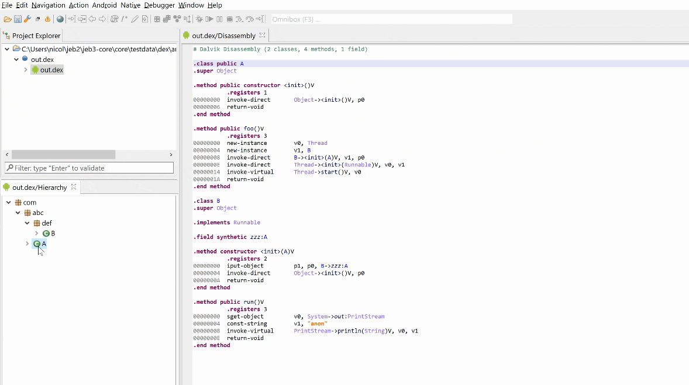

Often times, obfuscators remove annotations and other hints indicating that a class is an anonymous member of a method. Dex units support manually anonymizing classes, either via scripting or using the GUI client.
To make a class anonymous using the GUI client: in the code hierarchy, drag the class item node and drop it onto the target method item node. If it is deemed possible, the class will be made anonymous. Make sure to redecompile the target method (or its containing class) to see the updated result in decompiled code.
